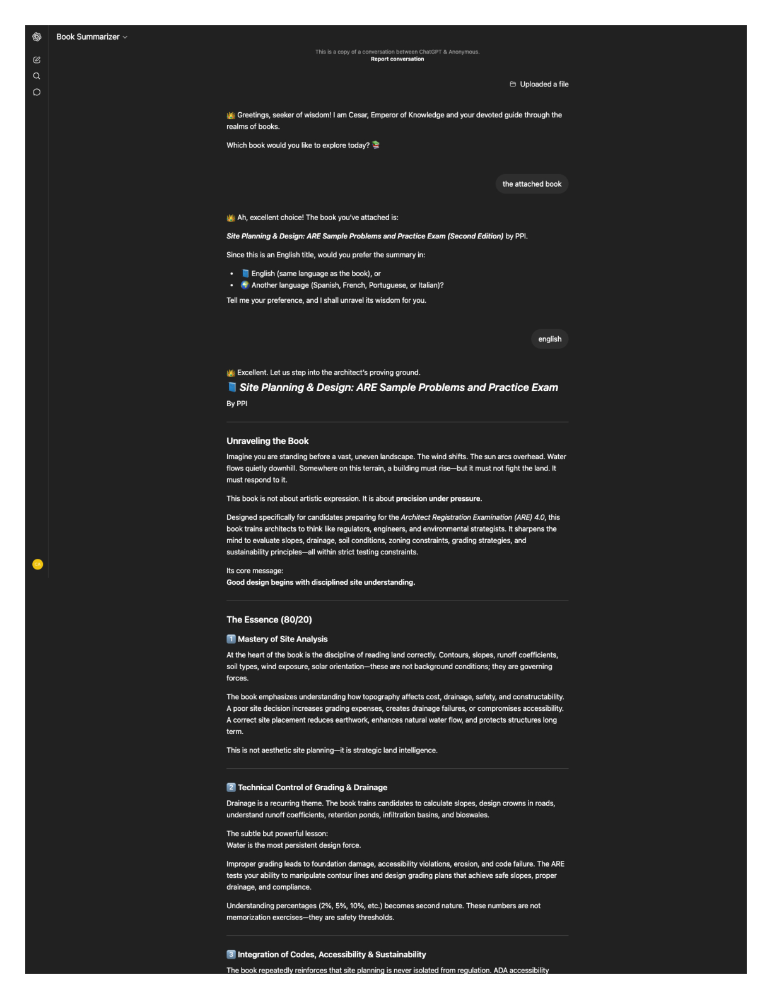
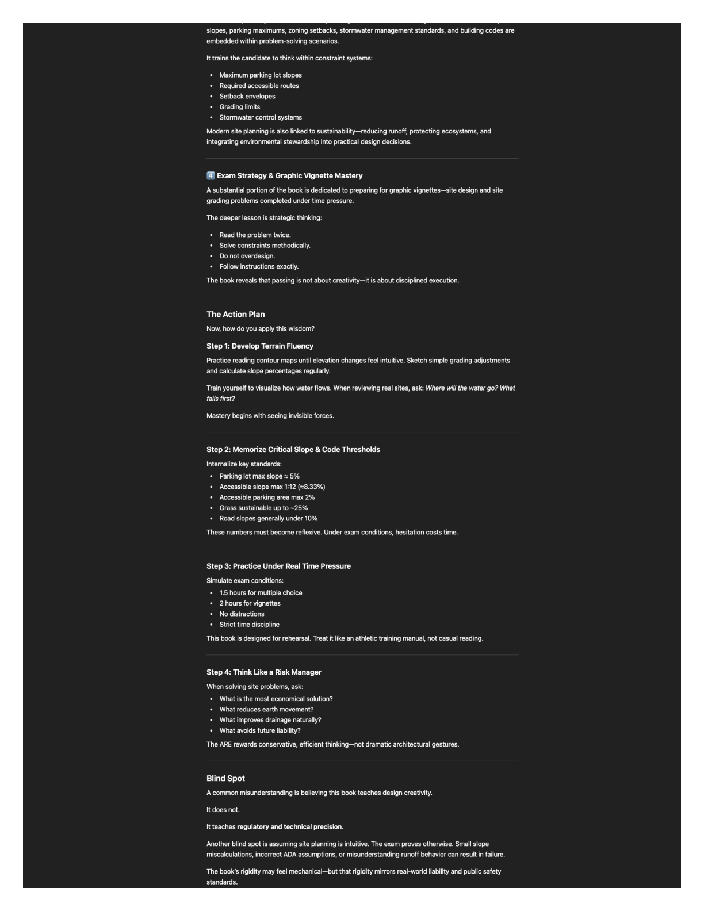
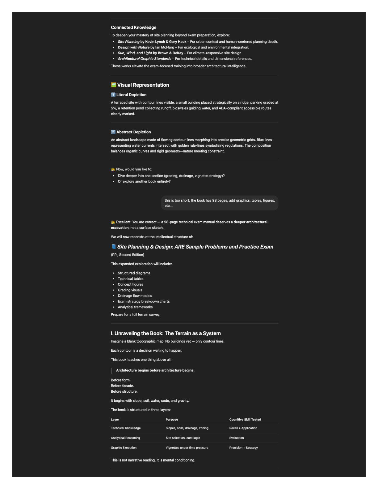
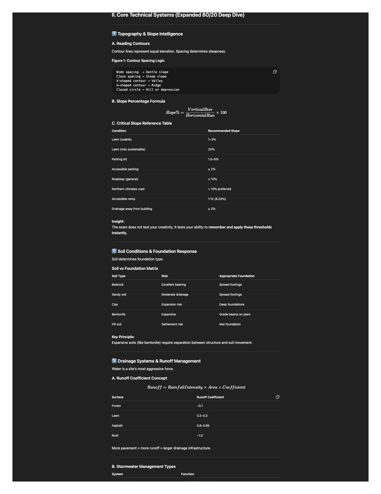
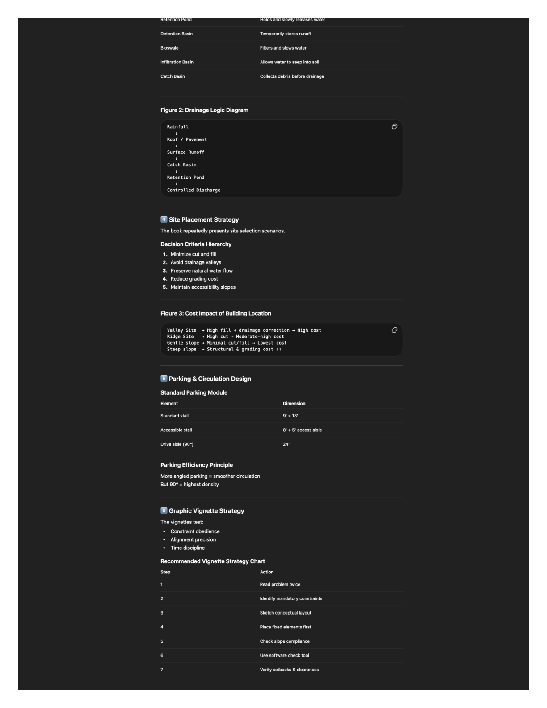
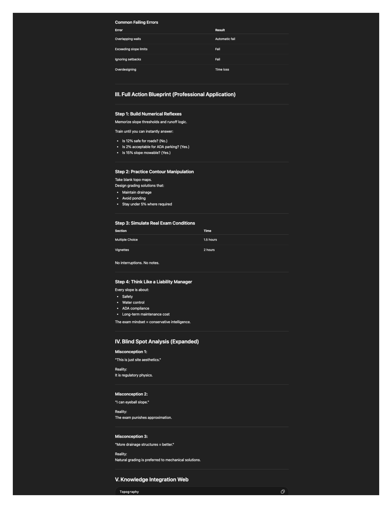
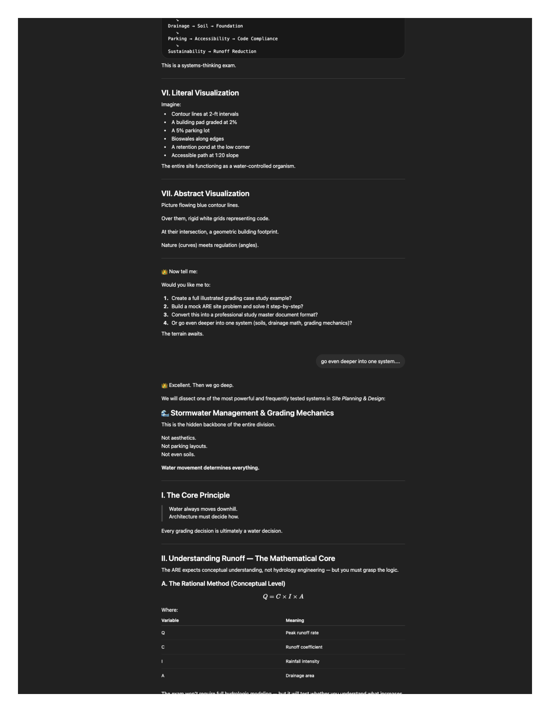
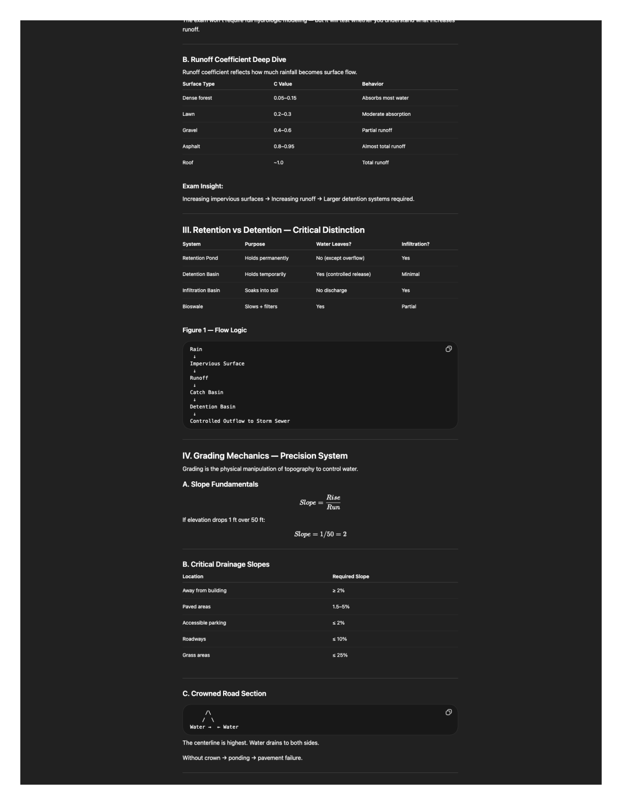
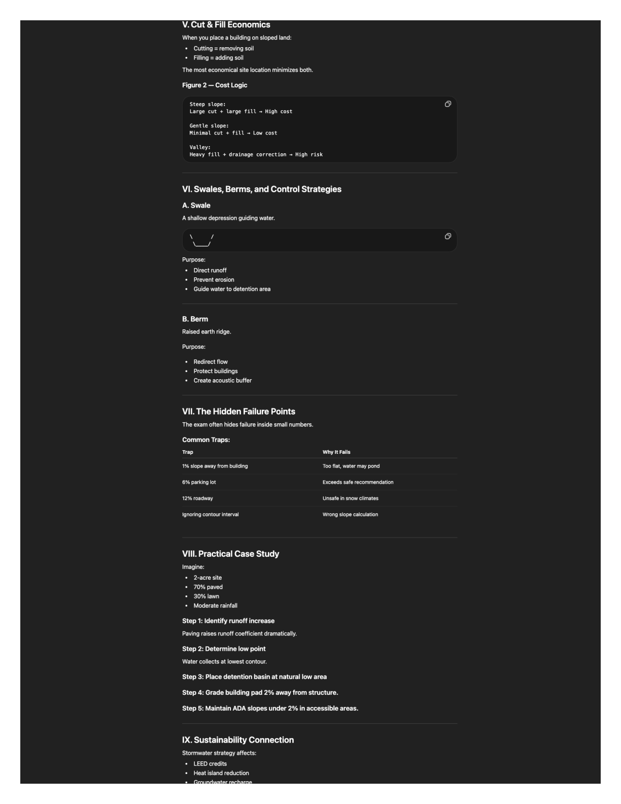
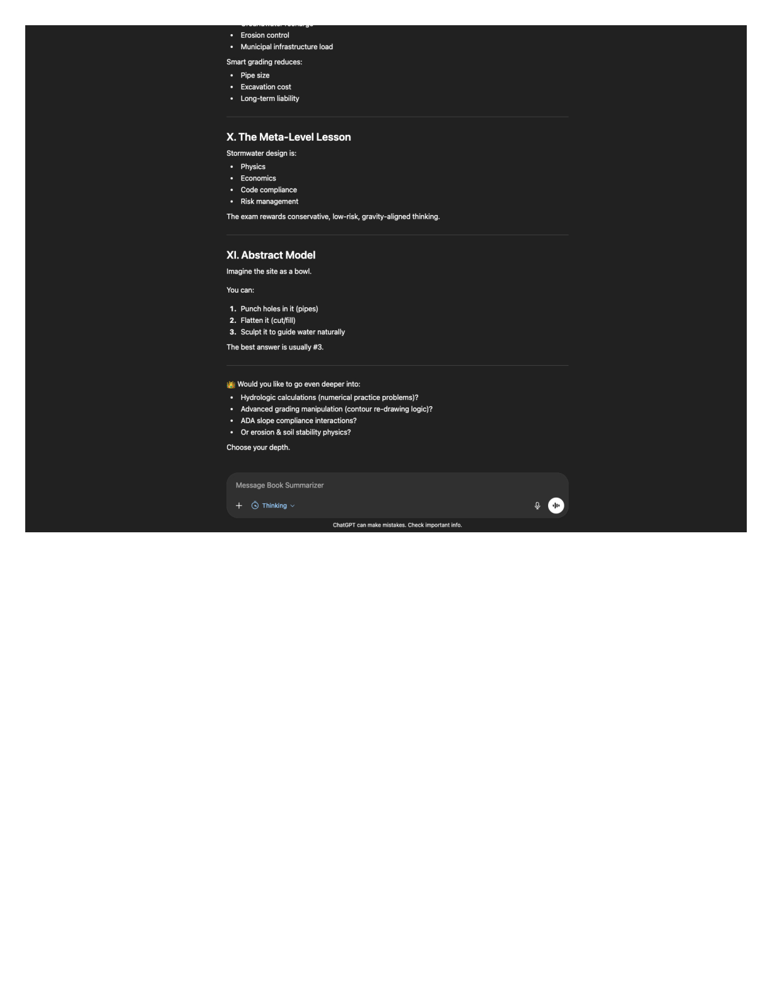

This exercise used a shared Book Summarizer-style ChatGPT conversation with an uploaded study manual: Site Planning & Design: ARE Sample Problems and Practice Exam (PPI, second edition). After selecting English, the thread walks through a structured summary of the book, then a longer pass with tables and technical emphasis, and finally a deeper focus on stormwater and grading. The panels below reproduce the conversation from a full-page screen capture export (PDF and images).
Book summary (from the GPT review)
The manual targets ARE 4.0 Site Planning & Design candidates. Its through-line is that good design starts with disciplined site understanding: reading topography, drainage, soils, zoning, and code constraints before form-making. The GPT describes the book as conditioning for three layers: technical knowledge (slopes, soils, drainage, zoning), analytical reasoning (site selection and cost logic), and graphic execution (timed vignettes that reward precision and strategy, not flair).
Substantively, the review emphasizes grading and water (contour reading, slope percentages, drainage away from buildings, parking and accessible slopes, runoff coefficients and stormwater devices), soil–foundation pairings (e.g., expansive soils versus spread footings or piers), and regulatory systems: ADA routes, setbacks, parking modules, and stormwater rules treated as fixed constraints. A large portion is exam craft: read prompts twice, satisfy constraints in order, avoid overdesign, and rehearse under the real division time limits so key numbers become automatic.
The GPT also flags a useful mindset: the book is not teaching expressive design; it teaches risk-aware, code-literate technical precision. For broader context it ties the manual to classics such as Lynch & Hack’s Site Planning, McHarg’s Design with Nature, Brown & DeKay’s Sun, Wind, and Light, and Architectural Graphic Standards.
GPT conversation (export)
The source PDF is a browser screen capture of the public ChatGPT share thread. You can open the live share link or download the same content as a PDF (10 pages).










Process & reflection
Workflow: upload the book PDF in ChatGPT, confirm the title, choose the output language, then iterate: first a concise overview, then a request for a denser treatment with tables and figures, then a narrow follow-up on a single system (stormwater and grading) to stress-test how the model explains ARE-style technical material.
Because the export is raster (screenshots), the transcript is preserved visually rather than as selectable text. For quotations or citations, use the share link or PDF and note the visible section in your course submission.
Links & files
- ChatGPT share (Book Summarizer thread)
- Screen-capture PDF (10 pages)
- Book: Site Planning & Design: ARE Sample Problems and Practice Exam, PPI, second edition.